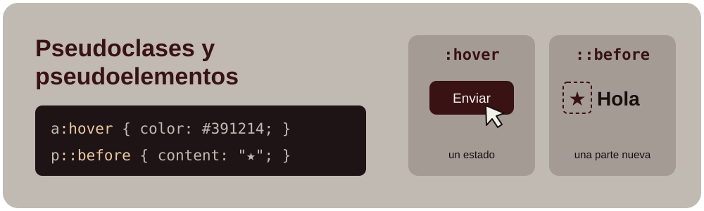

¿Qué es una pseudoclase?
:nombre-pseudoclaseSelecciona un elemento cuando está en un estado concreto, como si tuviera una clase extra. Se escribe con un solo :.

Una pseudoclase (un solo :) selecciona un elemento cuando está en un estado concreto: el primero de su grupo, el que tiene el cursor encima o un campo con un dato no válido. Un pseudoelemento (doble ::) actúa como si añadieras un elemento nuevo al HTML, como la primera línea de un párrafo o un contenido antes o después del texto.
:nombre-pseudoclaseSelecciona un elemento cuando está en un estado concreto, como si tuviera una clase extra. Se escribe con un solo :.
article p:first-child {
font-weight: bold;
}Elige el primer hijo de su grupo.
li:last-child {
font-weight: bold;
}Elige el último elemento entre sus hermanos.
li:only-child {
font-style: italic;
}Se aplica cuando el elemento no tiene hermanos: es hijo único.
li:nth-child(2n + 1) {
background: #C0BAB3;
}Elige hermanos con una fórmula. 2n + 1 selecciona los impares.
a:hover {
color: #391214;
}Se activa cuando pasas el cursor por encima. Es una pseudoclase de acción del usuario.
input:focus {
outline: 3px solid #887D77;
}Se activa cuando el elemento recibe el foco, por ejemplo con el teclado.
input:invalid {
border-color: red;
}Marca un campo de formulario cuyo valor no es válido.
input:checked + label {
font-weight: bold;
}Selecciona una casilla o botón de opción que está marcado.
button:disabled {
opacity: .5;
}Selecciona un elemento de formulario que está inactivo.
p:not(.nota) {
color: gray;
}Selecciona los elementos que no coinciden con lo que pones entre paréntesis.
::nombre-pseudoelementoActúa como si agregaras un elemento nuevo al HTML. Se escribe con ::; los antiguos usaban un solo :.
p::first-line {
text-transform: uppercase;
}Da estilo a la primera línea del párrafo, aunque cambie el ancho de la pantalla.
La primera línea cambia y el resto del párrafo queda igual.
p::first-letter {
font-size: 2em;
}Da estilo solo a la primera letra del elemento.
Había una vez
p::before {
content: "★ ";
}Inserta contenido antes del texto. Úsalo para iconos decorativos: algunos lectores de pantalla no lo leen.
Favorito
a::after {
content: " →";
}Inserta contenido después del texto. Siempre va con la propiedad content.
Siguiente
article p:first-child::first-line {
font-size: 120%;
font-weight: bold;
}Selecciona la primera línea del primer párrafo dentro de un article.
::selection {
background: #391214;
color: #F3EFEA;
}Da estilo al texto que el usuario selecciona con el cursor.
Selecciona este texto